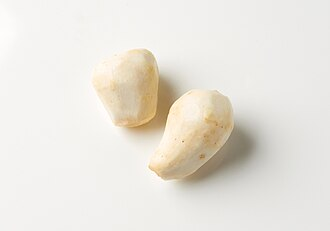

さといも（里芋）の生産量
いちばん多くとれる都道府県
さといもが日本でいちばん多くとれるのは埼玉県です。1万7,600 tで、全国（11万8,900 t）の15%を占めます。

| 順位 | 都道府県 | 収穫量 | 全国に占める割合 |
|---|---|---|---|
| 1位 | 埼玉県 | 1万7,600 t | 15% |
| 2位 | 宮崎県 | 1万1,800 t | 9.9% |
| 3位 | 千葉県 | 9,680 t | 8.1% |
この数字について
- 分類：サトイモ科
- 全国の収穫量：11万8,900 t
- この数字が表すもの：収穫量（畑や田でとれた重さ）
- 調査：作物統計調査 作況調査（野菜） 令和6年産
- 26県分を調査（調査していない県は順位に入りません）